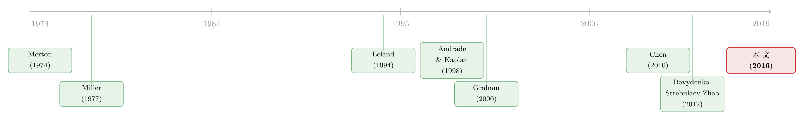

我们只统计了「死得不那么惨」的那些公司
本文读的是 Glover (2016, JFE)：我们对「违约到底有多贵」的实证认知，几乎全部来自那些真的违约了的公司——可偏偏正是这批公司，系统性地属于「违约成本最低」的一群。把这个样本选择偏差 (sample selection bias) 用一个动态资本结构模型校正回来，作者发现：普通公司预期一旦违约会损失 45% 的公司价值，远高于既有估计；但模型里那些真违约的公司，平均损失只有 25%——恰好与数据里观测到的数字吻合。一个被低估了将近一倍的数，顺手解开了「企业为什么不多借钱」的老谜题。
1 一个被反复确认、却可能问错了对象的数字
先说一个在公司金融里几乎被当成常识的结论：违约其实没那么贵。
证据看起来相当扎实。直接破产成本的估计一个比一个小——Warner (1977) 给出 5.3%，Weiss (1990) 给出 3.1%，Altman (1984) 给出 6%，都是相对于破产前公司价值。就算把间接成本（客户流失、供应商关系破裂、火线甩卖、声誉损失……）一并算进去，Andrade and Kaplan (1998) 用 31 笔高杠杆交易估出 10–23%，Davydenko, Strebulaev, and Zhao (2012) 用 175 家违约公司估出 21.7%（相对资产市值）。数字有高有低，但方向一致：违约的代价，远没有想象中那么吓人。
这个「常识」并不是孤立的。它顶着一个更大的问题往前走——低杠杆之谜。Miller (1977) 早就抱怨过：相对于债务的税盾收益，违约和困境成本看上去太小了，小到无法解释现实中那些保守的杠杆率。Graham (2000) 把税盾收益估到了公司价值的 5%，然后顺理成章地下了一个结论：从权衡理论 (trade-off theory) 看，许多公司借得太少了，是「过度保守」。
于是一条因果链就这样焊死了：违约成本很低 → 借债的税盾收益相对可观 → 公司本该多借 → 现实里却借得少 → 所以公司不理性 / 模型不行。
这篇论文要拆的，正是这条链子的第一环。
2 真正关键的一步：我们观测的是谁？
接着，一个自然的问题是：那 175 家违约公司、那 31 笔高杠杆交易，能代表所有公司吗？
作者的回答是不能——而且不能的方式非常系统。这里的逻辑链条短得让人有点不安：
在一个权衡模型里，违约成本越高的公司，越会主动选择更低的杠杆——因为它更怕违约，所以离悬崖更远。可杠杆越低，违约概率就越低。于是「最终真的走到违约这一步」的公司，恰恰是那些违约成本本来就低的公司。
把这句话翻译成期望的语言，全文的核心就一行：
$$\mathbb{E}\big[\alpha_i \mid \text{default}\big] \;<\; \mathbb{E}\big[\alpha_i\big]$$
这里 α_i 是公司 i 在违约时损失掉的那部分公司价值——也就是「违约成本」。左边是我们能观测到的（违约样本里的平均成本），右边是我们真正想知道的（所有公司事前预期的平均成本）。因为违约概率随 α 递减，条件期望天然小于无条件期望。
这不是测量误差，不是噪声，而是一个有方向的、内生的偏差。它的根源在于：企业在选杠杆时、信用市场在给债定价时，都已经把各自的违约成本内部化进了决策里。换句话说，偏差不是因为我们测不准，而是因为市场本身在按 α 做筛选，而我们只捡到了筛子另一头漏下来的样本。
注意这跟「违约只发生在边际效用高的坏时点、所以风险调整后更贵」（Almeida and Philippon, 2007）是两件不同的事。后者讲的是何时违约，前者讲的是谁违约。Elkamhi, Ericsson, and Parsons (2010) 指出，Almeida–Philippon 的算法没有滤掉那些与杠杆无关、却把公司推向困境的经济冲击。本文用结构模型直接绕开了这个问题。
3 模型：把违约成本从「价格」里反推出来
但光说「有偏差」是定性的。要把偏差量出来，得有一个能算出每家公司事前预期违约成本的框架。这正是本文的技术核心：一个动态资本结构 (dynamic capital structure) 的结构模型，沿用了 Chen (2010)、Bhamra, Kuehn, and Strebulaev (2010a,b)、Hackbarth, Miao, and Morellec (2006) 这一脉已被验证「量化表现良好」的设定。
我们一步步看它怎么搭起来。
第一块积木：现金流。 经济体的总盈利 X_A 服从一个受宏观状态调制的几何布朗运动。宏观状态 ν_t 在 {H, L}（好/坏）两态之间按泊松到达切换——这是一条时间齐次的马尔可夫链。总盈利的演化为
$$\frac{dX_{A,t}}{X_{A,t}} = \mu_A(\nu_t)\,dt + \sigma_A(\nu_t)\,dW^A_t$$
注意漂移率 μ_A(ν_t) 和波动率 σ_A(ν_t) 都随宏观状态变化——好年景和坏年景，增长和风险都不一样。
第二块积木：公司异质性。 单家公司的税前盈利 X_i 既吃总盈利冲击，也吃自己的特质冲击：
$$\frac{dX_{i,t}}{X_{i,t}} = \big[\mu_i + \mu_A(\nu_t)\big]\,dt + \beta_i\,\sigma_A(\nu_t)\,dW^A_t + \sigma_{i,F}\,dW^i_{t,F}$$
这里 μ_i 是公司特有、与状态无关的增长成分，β_i 刻画公司对总盈利冲击的暴露，σ_{i,F} 是特质波动。关键在于：公司在事前就是异质的——增长、风险暴露、特质波动，乃至下面要登场的违约成本 α_i，都因公司而异。这与 Bhamra–Kuehn–Strebulaev (2010a) 那种「所有公司事前相同、只因事后冲击而分化」的设定截然不同，也正是本文能算出跨公司违约成本分布的前提。
第三块积木：定价核。 市场完备，存在一个随宏观状态变化的定价核：
$$\frac{d\pi_t}{\pi_t} = -r(\nu_t)\,dt - \varphi(\nu_t)\,dW^A_t$$
φ(ν_t) 是随状态变化的市场风险价格——这一项让模型能产生逆周期的风险溢价，是这类模型能同时匹配观测到的平均杠杆和信用利差的关键（Hackbarth, Miao, and Morellec, 2006；Chen, Collin-Dufresne, and Goldstein, 2009）。
第四块积木：违约与成本。 无杠杆公司价值就是其永续现金流的索取权，在状态 ν_t 下可写成一个推广的 Gordon 公式：
$$VU_i\big(X_{i,t}, \nu_t\big) = \frac{X_{i,t}}{r^U_i(\nu_t)}$$
而一旦公司 i 在 t 时刻违约，债权人接管公司，拿到的不是全部，而是
$$\big(1-\alpha_i\big)\,VU_i\big(X_{i,t}, \nu_t\big)$$
α_i 就是那个主角：违约时损失掉的无杠杆公司价值的比例。作者不去具体刻画这笔损失的来源（火线甩卖？法律费用？管理层更替？），而是把它当作一个待估的、公司特有、跨宏观状态不变的参数。
3.1 把一切收束到一个权衡
有了这些零件，公司的问题就是一句话：在发债的税盾收益与违约的预期成本之间权衡，最大化时点 0 的公司价值。 股东选择息票率 C(ν_0) 和向上重组的盈利门槛 X_U(ν_0)，求解
债务是永续债，违约门槛由股东的「平滑粘合条件」(smooth-pasting condition) 内生决定；公司只能向上重组（境况好时再发债），且重组要付一笔比例成本 φ_D，所以公司不会连续微调杠杆，而是攒到盈利越过门槛才动一次。整个杠杆、信用利差、违约决策，都是在这个权衡里内生出来的。
正因为 α_i 进入了这个最优化——它越大，最优杠杆越低、违约越罕见——所以「违约成本」和「是否被观测到违约」之间，被模型牢牢地拴在了一起。这恰恰是第 2 节那个选择偏差的微观来源。
一个值得强调的点：作者特意说明，选择偏差本身并不依赖时变宏观风险这套机制。只要违约成本会影响公司的杠杆选择、进而影响其违约概率，偏差就会出现，在很多模型环境里都成立。时变宏观条件是为了让模型在量级上对得上数据（平均杠杆、信用利差、违约率），而不是为了「制造」偏差。
（这类「发债不可逆、一点发行成本就替股东锁住了税盾」的动态，正是结构信用模型这几年最有意思的地方，可参见《债，其实一直在动：当「随机发债」补全了信用风险的另一半》与《发债没有回头路：一点发行成本，如何替股东锁住了税盾》。）
4 数据与估计
模型要落地，得喂数据。
- 总量参数：用 NIPA Table 1.14 的季度总盈利数据来估计这条状态切换的总盈利过程，识别假设是「坏状态对应负的盈利增长」。
- 公司样本：
2,505家美国上市公司。对每一家，用其可观测的特征（杠杆、波动率等）做结构估计，反推出它那套公司特有的现金流参数与违约成本α_i。 - 方法：第一步估出全体公司的联合横截面分布，第二步再次模拟模型，得到「在估计出来的参数分布下，事后真的违约的那批公司」长什么样——这一步直接给出了选择偏差的大小。
注意这套做法的妙处：α_i 这个量本身不可观测，它是公司事前用来定杠杆、信用市场用来定价的「影子参数」。它不受选择偏差污染，因为它不是从违约样本里读出来的，而是从所有公司的最优化行为里反推出来的。
5 结果：被低估了将近一倍
现在把两个数字摆在一起。
普通公司的事前预期违约成本：均值 45%，中位数 37%。这远高于既有的所有实证估计。
模型里那批真违约的公司，平均成本只有 25%。
这两个数字的对比，是全文最漂亮的地方，原因有二：
其一，它直接量出了选择偏差。 普通公司预期的违约成本（45%），几乎是违约样本里推断出来的平均值（25%）的两倍。我们一直用「死掉的公司」去估「活着的公司怕什么」，结果把那份恐惧砍掉了将近一半。
其二，也更重要——那个 25% 不是凭空冒出来的，它对得上数据。 它是「违约样本平均成本」在模型里的对应物，而它恰好落在 Davydenko, Strebulaev, and Zhao (2012) 的 21.7%、Andrade and Kaplan (1998) 的 10–23% 这个区间里。这是一个过度识别 (over-identifying) 的检验：模型并没有被要求去匹配这个数，它是自己「长」出来的。一个能同时产生「45% 的真实预期」和「25% 的观测幻象」的模型，远比只能产生其中一个的模型可信。
于是反转完成了。回到第 1 节那条焊死的因果链：低观测违约成本，不再等于「公司借得太少」。 一旦把违约成本的异质性、以及它诱发的选择偏差考虑进去，模型能在复现「数据里那些低杠杆公司」的同时，照样复现数据里观测到的低违约成本。换句话说，那些看似「过度保守」的公司，可能只是违约成本本来就高、因而理性地选择了低杠杆——我们却因为它们很少违约而几乎没在违约样本里见过它们。van Binsbergen, Graham, and Yang (2010) 曾估计大约一半的债务成本来自违约或困境；本文则提示，由于选择偏差，违约成本在企业总债务成本里占的份额，应该比我们以为的更大。
（这种「高困境成本的公司主动选低杠杆」的直觉，与困境风险溢价之谜的讨论一脉相承——George and Hwang (2010) 正是用它来解释股票横截面里的困境风险与杠杆之谜，可参见《高 beta、低收益：困境股票里那根会「看天」的杠杆》。）
6 文献脉络
把这条线索捋一遍，会发现本文站在两股河流的交汇处。
一股是结构信用模型。 源头是 Merton (1974) 把公司债看成对公司价值的期权，和 Leland (1994) 给出的最优资本结构闭式解。此后 Goldstein, Ju, and Leland (2001) 引入动态重组，Strebulaev (2007) 证明这类模型能产生与多项经验事实一致的资本结构动态，再到 Hackbarth, Miao, and Morellec (2006)、Chen (2010)、Bhamra, Kuehn, and Strebulaev (2010a,b) 把时变宏观风险塞进来，让模型在量级上真正对上了信用利差与杠杆。本文的模型设定，正是这一脉的直系后裔。
另一股是「违约到底有多贵」的实证测量。 从 Warner (1977)、Weiss (1990)、Altman (1984) 的小额直接成本，到 Andrade and Kaplan (1998)、Davydenko, Strebulaev, and Zhao (2012) 把间接成本也纳进来，再到 Miller (1977)、Graham (2000)、Korteweg (2010) 围绕「低杠杆之谜」展开的争论——这条线一直在问「数字是多少」，却很少有人追问「这个数字是从谁身上测出来的」。
本文的贡献，是把第一股河流（结构模型）当作工具，去诊断第二股河流（实证测量）里一直没被点破的病灶：选择偏差。它没有推翻 21.7% 这个观测值，反而解释了它——并告诉我们，它只是冰山在水面上的那一角。

7 评论与延伸（Q&A + 研究方向）
(a) 几个可能的疑问
Q：这个「选择偏差」和普通的测量误差有什么本质区别？
测量误差是无方向的噪声，多测几次会抵消。这里的偏差是有方向、且内生的：违约概率系统性地随
α递减，所以违约样本永远偏向低α，再多的违约样本也修不正它——因为偏差来自市场的筛选机制，而非观测精度。这正是为什么必须用一个包含选择机制的结构模型才能校正，而不能靠加大样本。
Q：45% 这个数没有直接的实证对应物，凭什么相信它？
靠的是过度识别。模型在估计时并没有被要求去匹配「违约样本的平均成本」，但它内生地吐出了
25%，与 Davydenko–Strebulaev–Zhao 的21.7%高度吻合。一个能同时再现「真实预期45%」与「观测幻象25%」、且后者未被强行校准的模型，使前者这个不可观测量也变得可信。
Q：为什么违约成本高的公司「一定」会选低杠杆？
因为在权衡模型里，杠杆的代价就是预期违约损失 ≈ 违约概率 × 违约成本。
α越大，同样的杠杆带来的预期损失越大，最优解就是把杠杆调低、让违约门槛离当前现金流更远。这不是行为假设，而是最大化公司价值的一阶条件直接给出的。
Q：这是否意味着公司其实并没有「过度保守」？
在很大程度上是。本文表明，数据里那些低杠杆公司，可以在一个标准权衡模型里被理性地解释为「违约成本高、因而谨慎」的公司，而无需诉诸非理性或模型失灵。「低杠杆之谜」里至少有一块，是被选择偏差制造出来的统计幻觉。
Q：时变宏观风险（状态切换）是这个结论的必需品吗？
不是。作者明确指出，选择偏差在很广的一类模型里都会出现，只要违约成本影响杠杆、杠杆影响违约概率即可。时变宏观条件的作用是让模型在量级上（平均杠杆、信用利差、违约率）对得上数据，从而让
45%/25%这组具体数字可信，而非定性结论的前提。
Q：把 α_i 设成「公司特有但跨宏观状态不变」，会不会太强？
这是个值得警惕的简化。现实中违约成本很可能是逆周期的——坏年景里火线甩卖折价更深、资产更难脱手。附录 C 已显示违约成本分布在好/坏状态下确有差异。如果
α本身随状态升高，坏时点违约的公司成本更高，那么选择偏差的方向不变、但量级估计可能要重新校准。
(b) 几个可能的研究问题与提案
1. 把「选择偏差」搬到公司债流动性折价的估计上。
【经济故事】我们对债券流动性溢价的估计，几乎只来自有成交记录的债券；可一只债券会不会被交易，本身就与它的流动性相关——流动性最差的债券干脆躺着不动，从不进入我们的样本。这和本文「只观测违约公司」是同构的选择问题。 【可行性】中。需要 TRACE 全量报价/成交数据 + 一个内生交易决策的结构模型（谁、何时选择交易）。识别的难点在于刻画「不交易」这一未观测状态，但本文提供了清晰的方法论模板。
2. 外资持有人与违约成本的选择偏差。
【经济故事】若外资比例高的发行人系统性地面对不同的违约成本（跨境破产协调更难、信息更不对称），它们的杠杆选择会不同，从而扭曲「违约样本」的构成。外资重仓的高
α公司可能更少违约、更少被观测，使跨国违约成本比较产生偏差。 【可行性】中。需要跨国债券持有人数据（如 Morningstar/EPFR 的持仓）+ 各国违约/回收率数据，并把外资份额作为α的协变量嵌入估计。可与外资长期效应的实证对接（参见《外资真是「蝗虫」吗？》）。
3. 用 CDS 市场的风险中性违约概率，给 α_i 做一次「外部验证」。
【经济故事】本文的
α_i是从权益/杠杆侧反推的。CDS 利差则从信用侧、用风险中性概率直接给违约定价。两条独立路径若能对上同一个α，是对结构估计的强力交叉验证；若对不上，差额本身就揭示了被遗漏的风险溢价或流动性成分。 【可行性】高。Markit CDS 数据 + 本文的结构框架现成可用，单家公司层面即可做，识别清晰、doable。
4. 回收率 (recovery rate) 的同款选择偏差。
【经济故事】违约回收率的实证分布同样只来自违约债券。如果回收率与事前违约成本负相关，那么观测到的平均回收率也可能系统性地偏离「全体公司事前预期的回收率」，方向与本文的
α偏差相呼应。 【可行性】中。Moody's URD 回收数据 + 把回收率作为(1-α)的函数嵌入模型。难点是回收率受清算 vs 重组、行业困境等多重因素干扰（Acharya, Bharath, and Srinivasan, 2007），需要额外控制。
8 我的判断
贡献。 这篇文章最漂亮的，不是那个 45% 的大数，而是它用一个最低限度的、几乎无法反驳的逻辑（违约概率随违约成本递减 → 违约样本偏向低成本）把一个被忽视了几十年的偏差点破，再用一个量化表现可靠的结构模型把它量化到位，并以 25% 这个未被校准却对上数据的副产品完成了自我验证。它没有制造新谜题，而是消解了一个旧谜题——这是结构估计最有价值的用法。
对识别的担忧。 我最不放心的有两处。其一，α_i 被设为跨宏观状态不变，而违约成本很可能是逆周期的——若真如此，坏时点违约的公司成本更高，选择偏差的量级可能被低估或高估，方向虽不变但数字要打折扣。其二，整套 45% 的可信度，归根结底绑定在模型设定上：它是「在这个模型里、给定这套现金流和定价核」的预期违约成本，换一族模型，数字会变。作者诚实地承认了「这个值没有直接的实证对应物」，这点值得敬佩，但也提醒读者：把 45% 当成一个模型条件下的论断，而非一个可被独立测量的事实。
后续想看到什么。 我最想看的是把 α 放开成逆周期的、并用 CDS 侧的独立信息去外部检验这套估计（即上面的研究方向 1 和 3）。如果一个完全独立的数据源也指向「普通公司的预期违约成本远高于违约样本」，那么本文的核心论断就从「一个模型的推断」升级为「一个稳健的经验规律」。在公司债与信用市场里，这种「我们只看见了幸存（或恰好死去）的那一类」的选择问题，恐怕远不止违约成本这一处。
参考文献
Almeida, H., Philippon, T. (2007). The risk-adjusted cost of financial distress. The Journal of Finance 62(6), 2557–2586.
Altman, E. I. (1984). A further empirical investigation of the bankruptcy cost question. The Journal of Finance 39(4), 1067–1089.
Andrade, G., Kaplan, S. N. (1998). How costly is financial (not economic) distress? Evidence from highly leveraged transactions that became distressed. The Journal of Finance 53(5), 1443–1493.
Bhamra, H. S., Kuehn, L.-A., Strebulaev, I. A. (2010a). The aggregate dynamics of capital structure and macroeconomic risk. Review of Financial Studies 23(12), 4187–4241.
Bhamra, H. S., Kuehn, L.-A., Strebulaev, I. A. (2010b). The levered equity risk premium and credit spreads: a unified framework. Review of Financial Studies 23(2), 645–703.
van Binsbergen, J. H., Graham, J. R., Yang, J. (2010). The cost of debt. Journal of Finance 65(6), 2089–2136.
Chen, H. (2010). Macroeconomic conditions and the puzzles of credit spreads and capital structure. Journal of Finance 65(6), 2171–2212.
Davydenko, S. A., Strebulaev, I. A., Zhao, X. (2012). A market-based study of the costs of default. Working paper.
Elkamhi, R., Ericsson, J., Parsons, C. A. (2010). The cost of financial distress and the timing of default. Working paper.
George, T. J., Hwang, C.-Y. (2010). A resolution of the distress risk and leverage puzzles in the cross section of stock returns. Journal of Financial Economics 96(1), 56–79.
Glover, B. (2016). The expected cost of default. Journal of Financial Economics 119(2), 284–299.
Goldstein, R. S., Ju, N., Leland, H. (2001). An EBIT-based model of optimal capital structure. Journal of Business 74(4), 483–512.
Graham, J. R. (2000). How big are the tax benefits of debt? Journal of Finance 55(5), 1901–1941.
Hackbarth, D., Miao, J., Morellec, E. (2006). Capital structure, credit risk, and macroeconomic conditions. Journal of Financial Economics 82(3), 519–550.
Korteweg, A. (2010). The net benefits to leverage. Journal of Finance 65(6), 2137–2170.
Leland, H. E. (1994). Corporate debt value, bond covenants, and optimal capital structure. Journal of Finance 49(4), 1213–1252.
Merton, R. C. (1974). On the pricing of corporate debt: the risk structure of interest rates. Journal of Finance 29(2), 449–470.
Miller, M. H. (1977). Debt and taxes. Journal of Finance 32(2), 261–275.
Strebulaev, I. A. (2007). Do tests of capital structure theory mean what they say? The Journal of Finance 62(4), 1747–1787.
Warner, J. B. (1977). Bankruptcy, absolute priority, and the pricing of risky debt claims. Journal of Financial Economics 4(3), 239–276.
Weiss, L. A. (1990). Bankruptcy resolution: direct costs and violation of priority of claims. Journal of Financial Economics 27(2), 285–314.